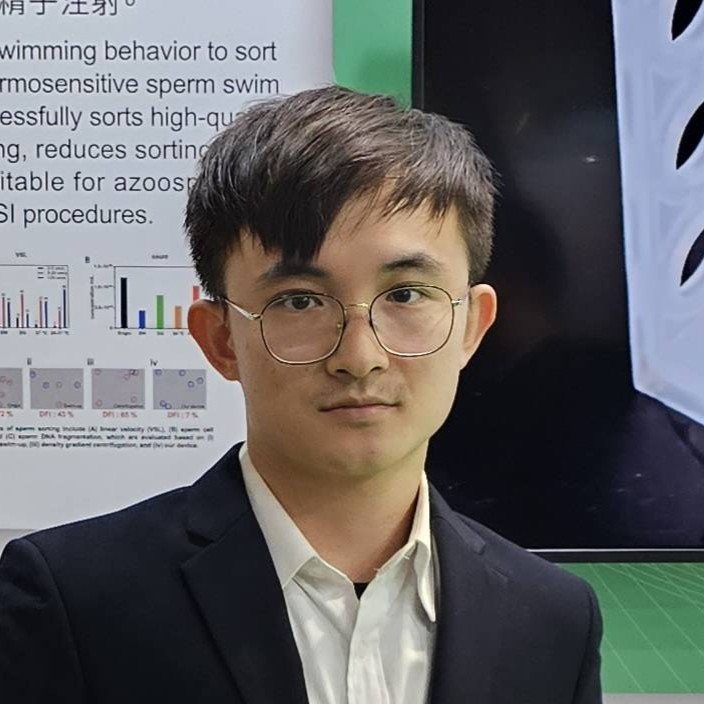

SENSE
Temperature, pressure, electrochemical current, images, angle, and velocity feedback.
- MLX90614
- EmStat Pico
- OV5640
EMBEDDED BIOMEDICAL SENSING / FPGA / RESEARCH INSTRUMENTATION
I am Pei An Chen, a Ph.D. candidate in Electrical Engineering at National Yang Ming Chiao Tung University. I connect sensors and actuators with low-power firmware, BLE, edge AI, Android, cloud infrastructure, and analysis workflows to build research tools that can be measured, verified, and continuously improved.

01 / SYSTEM ARCHITECTURE
Each project starts with a physical quantity, moves through hardware, firmware, connectivity, and application layers, and ends as traceable research data.
Temperature, pressure, electrochemical current, images, angle, and velocity feedback.
Sampling schedules, low-power state machines, motor control loops, and FPGA RTL.
BLE device identity, offline history, synchronization watermarks, and HPS-FPGA interfaces.
Android and Wear OS interaction, cloud data, image analysis, and research dashboards.
02 / SELECTED WORK
Public repositories link directly to source. Research-system cards show cross-project integration without exposing private code.
WEARABLE BIOSENSING
A multi-node BLE skin-temperature system integrating real-time Android visualization, Firebase synchronization, device management, and OTA updates.
BIOLOGICAL IMAGING
High-resolution, LED-assisted time-lapse imaging with ESP32-S3 and OV5640, extended into image analysis and motion-quantification workflows.
RELIABILITY LOGIC
A Verilog-2001 heartbeat-monitoring and timeout-control core with a cycle-accurate automated testbench and recovery-boundary verification.
LOW-POWER SENSING
Infrared-temperature firmware, I²C integration, and low-power analysis establishing a hardware baseline for next-generation wearable nodes.
DIGITAL SYSTEM DESIGN
Eight documented labs covering combinational logic, FSMs, RAM, a simple processor, and DE1-SoC HPS/Qsys integration.
PHYSIOLOGICAL DATA
Samsung Watch skin-temperature acquisition and a research data pipeline, with a PPG extension interface and explicit non-medical-use boundaries.
ELECTROCHEMISTRY
A portable research instrument integrating electrochemical measurement, a one-button workflow, TFT status feedback, measurement scripts, and SD logging.
MICROFLUIDIC CONTROL
A portable reaction platform combining smartphone illumination and imaging, dual pumps, microvalves, a PDMS pressure chamber, and a chip observation area.
REDUCED-GRAVITY MOTION
Dual-axis continuous-rotation servo control using angle feedback, velocity estimation, feedforward, and PID to create partial-gravity motion conditions.
9 systems visible
03 / RESEARCH TRACK
Research outcomes are more than circuit diagrams: they are operable systems, reproducible workflows, and technical communication adapted to different audiences.
Research exchange at Texas A&M University and a poster presentation at the RIES–CEFMS Joint Symposium, Hokkaido University.
Exhibited at the CES 2024 TTA Taiwan Tech Pavilion; delivered an oral presentation at the DMS–CEFMS Joint Symposium and a poster at ICSS.
A microfluidic research platform centered on thermal and flow behavior, recognized with the Future Tech Award and extended with image-based motion analysis.
Built a foundation in control, sensing, and integration through autonomous vehicles, machine vision, mBot, and AIoT competitions.
PLATFORM ARCHIVE
The three research themes from the original site are reorganized here while preserving each system's purpose, implementation, and technology.
Microgravity Simulation System Platform
Wearable IoT Device Development Platform
Biomimetic Microfluidic Bioengineering Platform
PUBLICATION + RECOGNITION
The original site records journal names only; article titles, author order, and publication status are therefore not inferred here.
Exhibited at the Consumer Electronics Show in the United States.
Recognition for the biomimetic microfluidic bioengineering platform.
Innovative research and entrepreneurship proposal.
Biomedical engineering concept proposal.
04 / PROFILE
From biomechatronics and biomedical engineering to electrical engineering, my research path consistently centers on sensing, control, digital design, and hardware-software integration.
CURRENT FOCUS
I focus on embedded firmware, FPGA and RTL, sensing platforms, IoT architecture, and TinyML, using a system-level perspective to manage interfaces among hardware, connectivity, applications, and research data.
National Yang Ming Chiao Tung University
National Yang Ming Chiao Tung University
National Ilan University
05 / CAPABILITIES
These are not isolated tool lists. They represent practical work spanning hardware, user-facing applications, and research data.
nRF52840 / nRF54L15 / ESP32 / Raspberry Pi / sensors / pumps / valves / motor feedback
SYSTEMC / C++ / Zephyr / Arduino / PlatformIO / LVGL / TinyML / low-power state machines
COREVerilog / Quartus / Qsys / FSM / memory / processor / self-checking simulation
RTLKotlin / Jetpack Compose / Wear OS / Room / Firebase / Health Connect
PRODUCTPython / OpenCV / LabVIEW / feature extraction / segmentation / Flask / research dashboards
DATAmicrofluidics / electrochemistry / biosignals / mechanical & CAD design / evidence tracking
LAB06 / CONNECTION
Explore GitHub for implementations, verification records, and current limitations. Engineering collaboration starts with a concrete problem and a measurable goal.